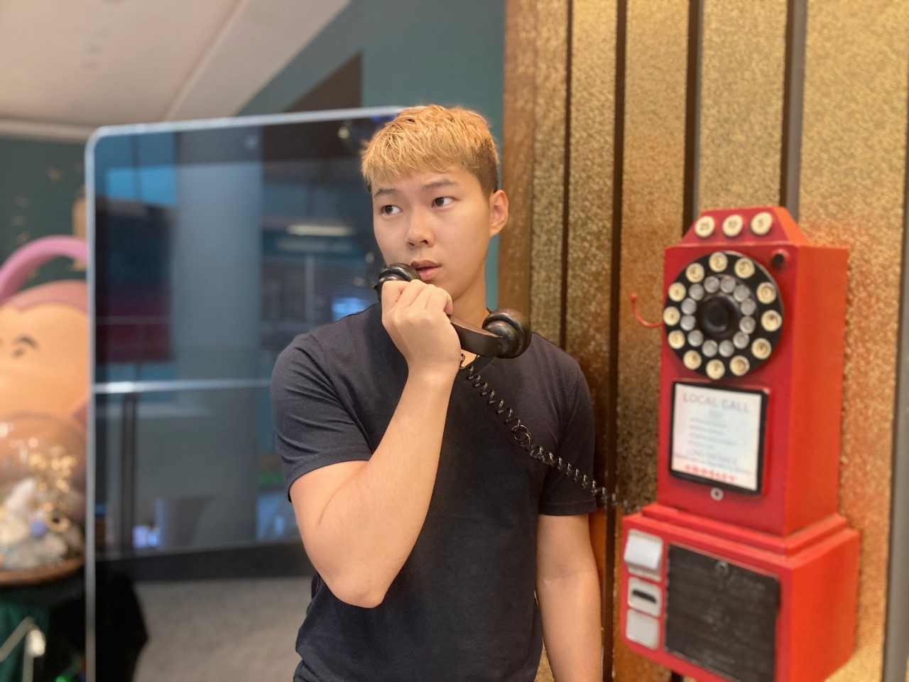

J
hone Smith
Victor is currently a PhD studnet in NUS.
Victor is currently a PhD studnet in NUS.
My name is Victor, Li Chuang
I’m currently a Year 1 PhD student of Intergrative Science and Engineering Program (ISEP)
under NUS Graduate School (NUSGS) starting from August 2020. I am jointly advised by Prof Kan Min-Yen from Web IR/NLP Group (WING)
School of Computing (SOC) and Prof Li Haizhou from
Human Language Technology (HLT) Lab in Department of Electrical and Computer Engineering.